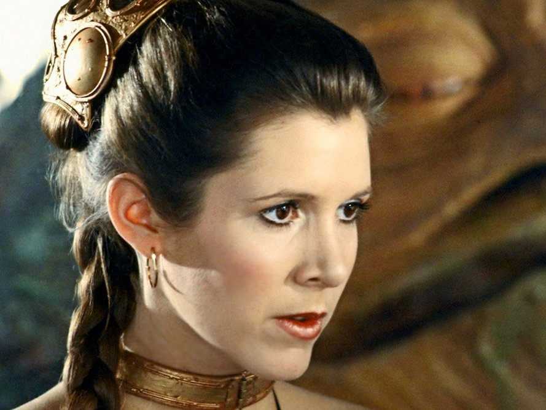
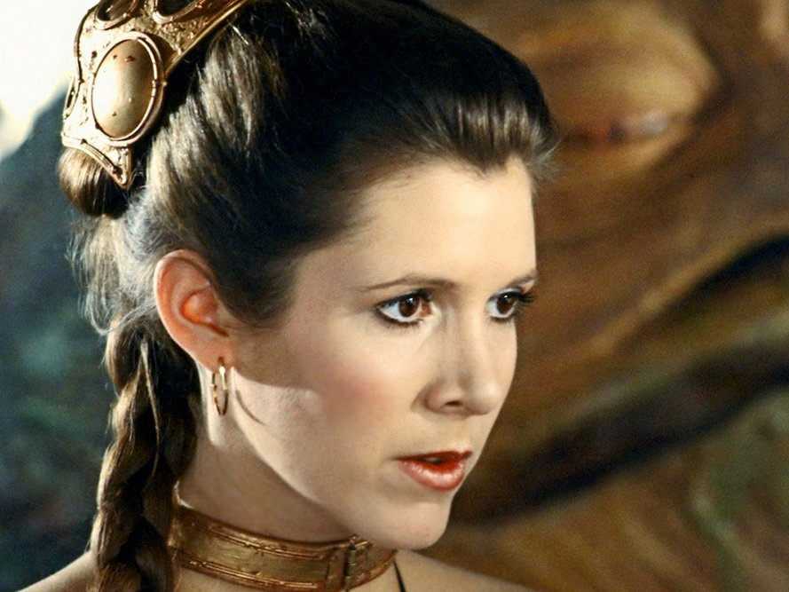

Dream Team


 



title: The Empire Strikes Back Episode: 5
release_date: 1980-05-17 opening crawl: It is a dark time for the
Rebellion. Although the Death Star has been destroyed, Imperial troops have driven the Rebel forces from their
hidden base and pursued them across the galaxy. Evading the dreaded Imperial Starfleet, a group of freedom
fighters led by Luke Skywalker has established a new secret base on the remote ice world of Hoth. The evil lord
Darth Vader, obsessed with finding young Skywalker, has dispatched thousands of remote probes into the far
reaches of space....